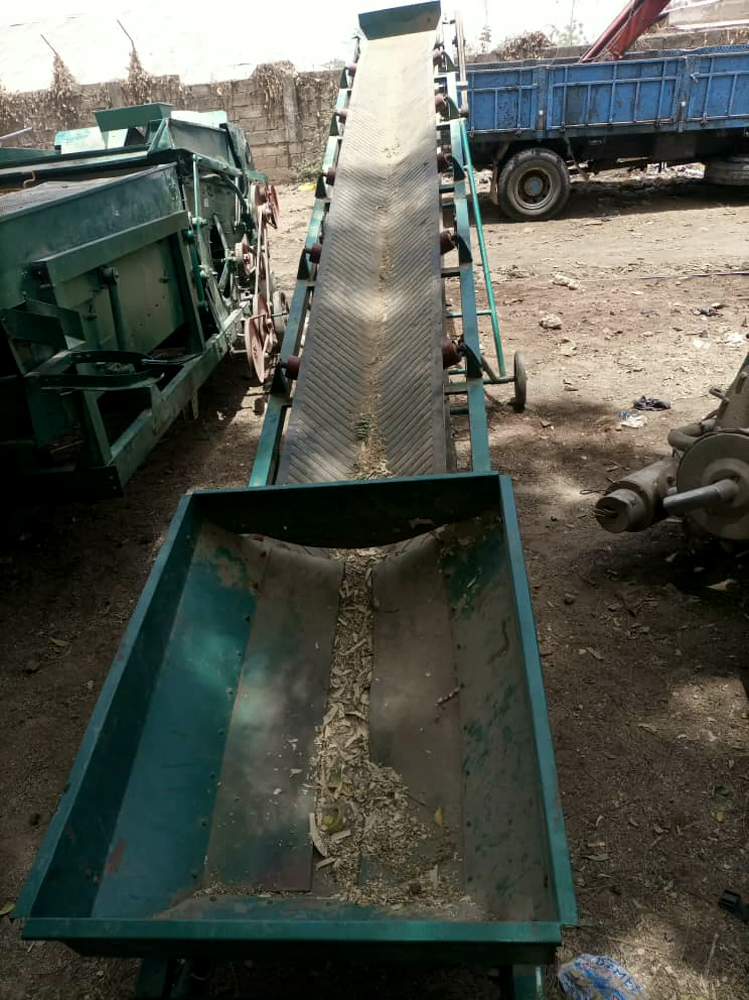
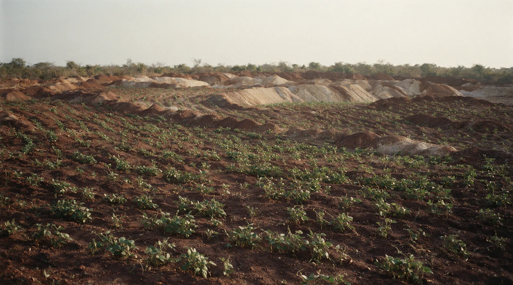

Lifecycle operations
From the first survey line to the last handover.
Five stages. Each one runs under its own compliance regime, equipment set and reporting cycle, and each one is designed so the next is still possible.
Exploration

- Safeguards & compliance
Extraction

- Safeguards & compliance
Processing

- Safeguards & compliance
Remediation

- Safeguards & compliance
Community

- Safeguards & compliance
The full technical dossier is available to verified counterparties.
Block models, assay records, monitoring results and community development agreements are shared under review with regulators, investors and offtake partners.
- Headquarters Location:
- Block 155, Room 9/10, Area C, Nyaya, Abuja, FCT, Nigeria
- Electronic Mail:
- danbiba2008@outlook.com